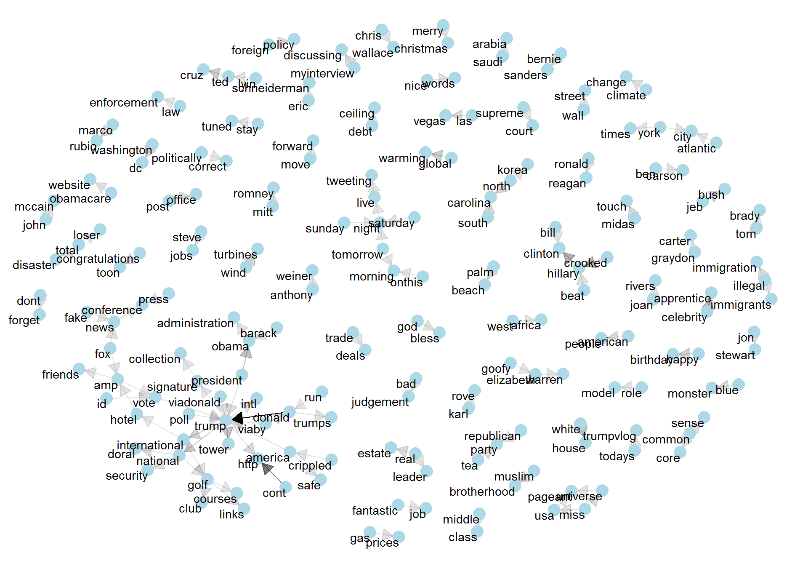
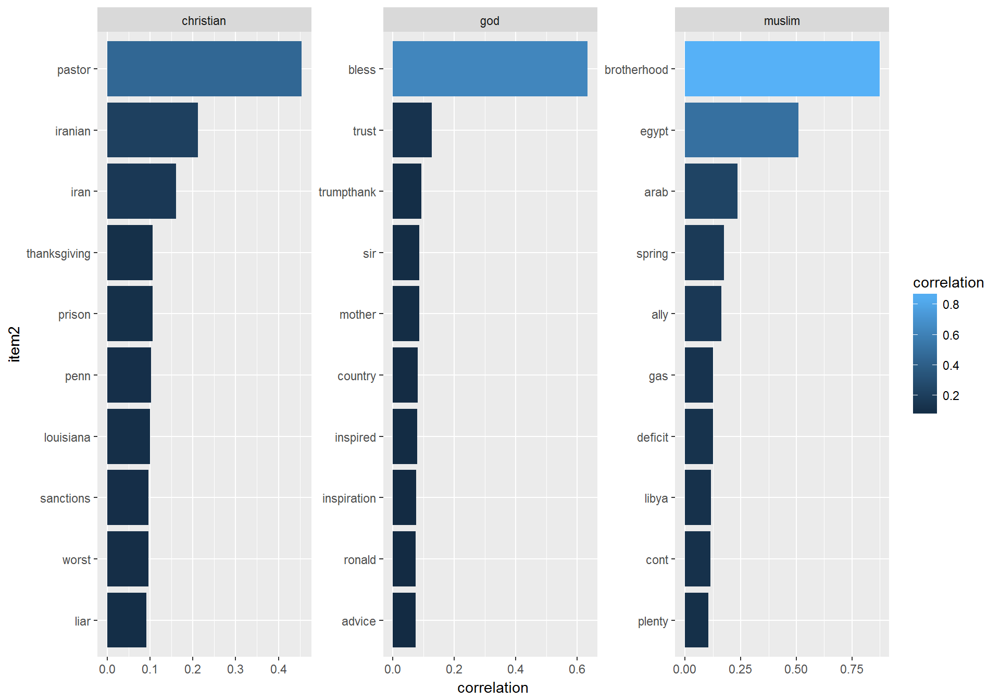
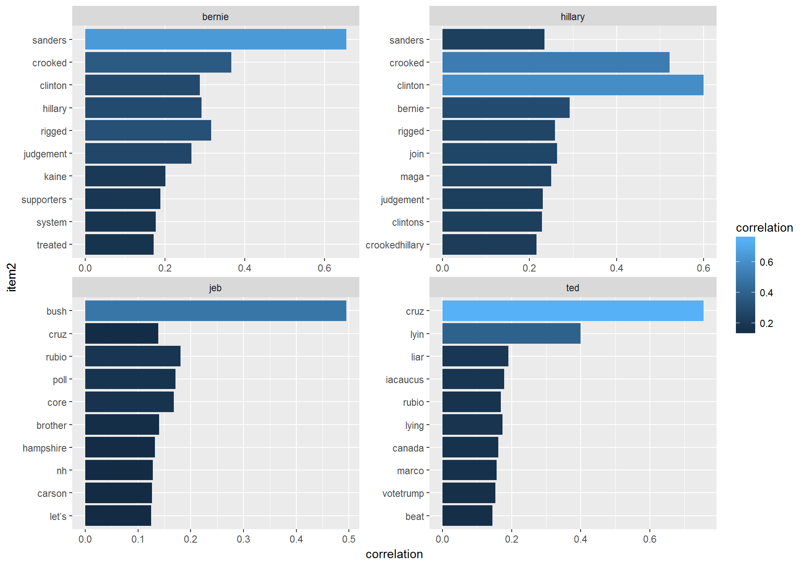
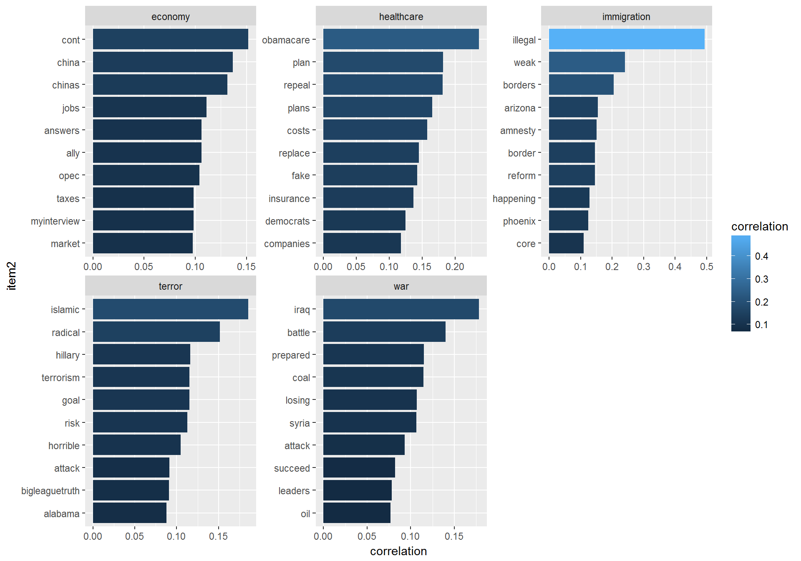
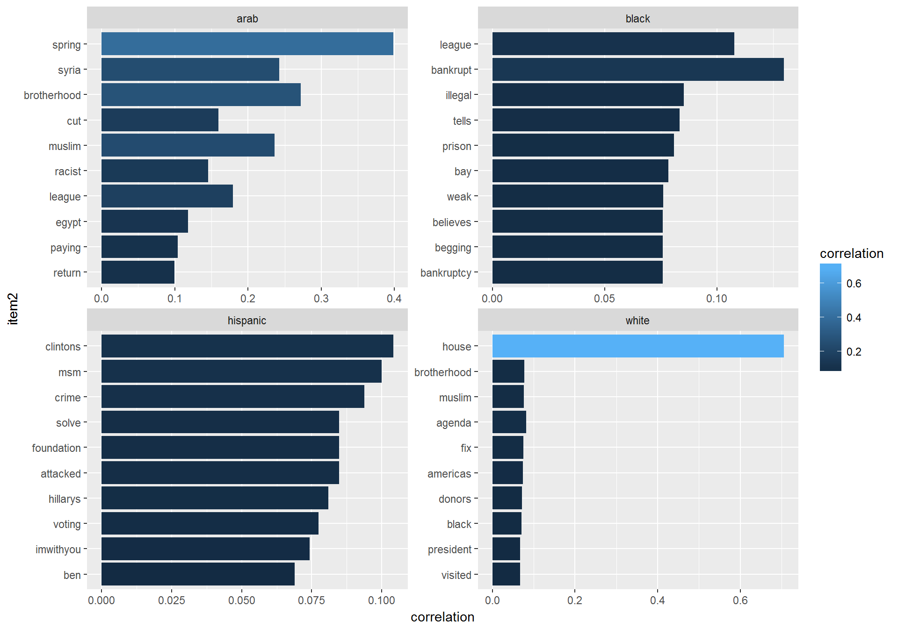
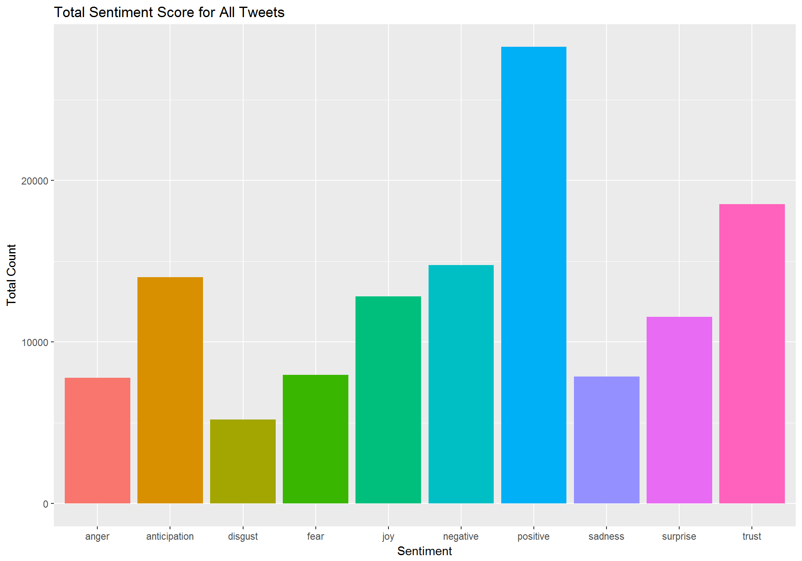
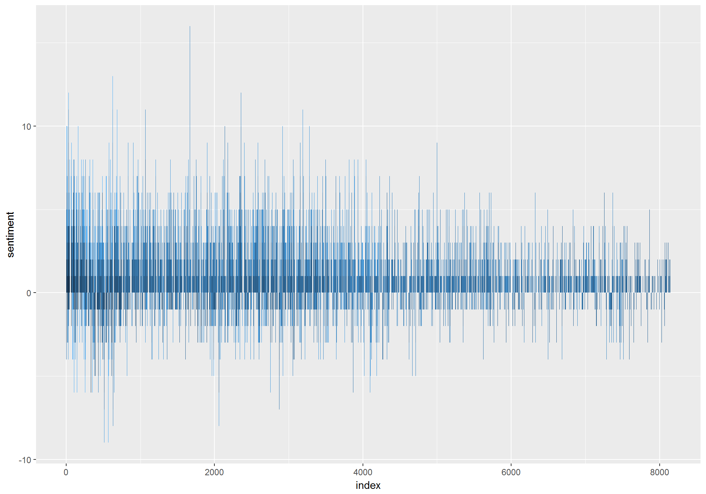
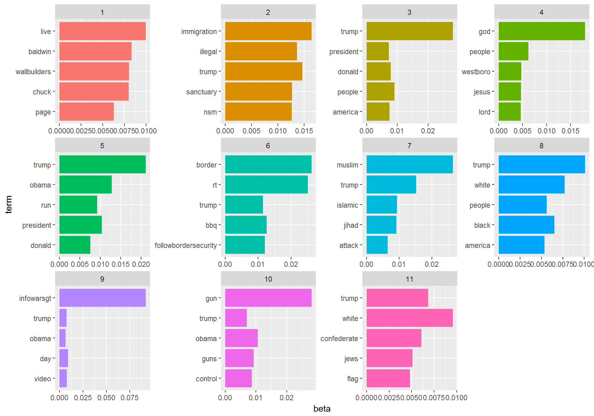
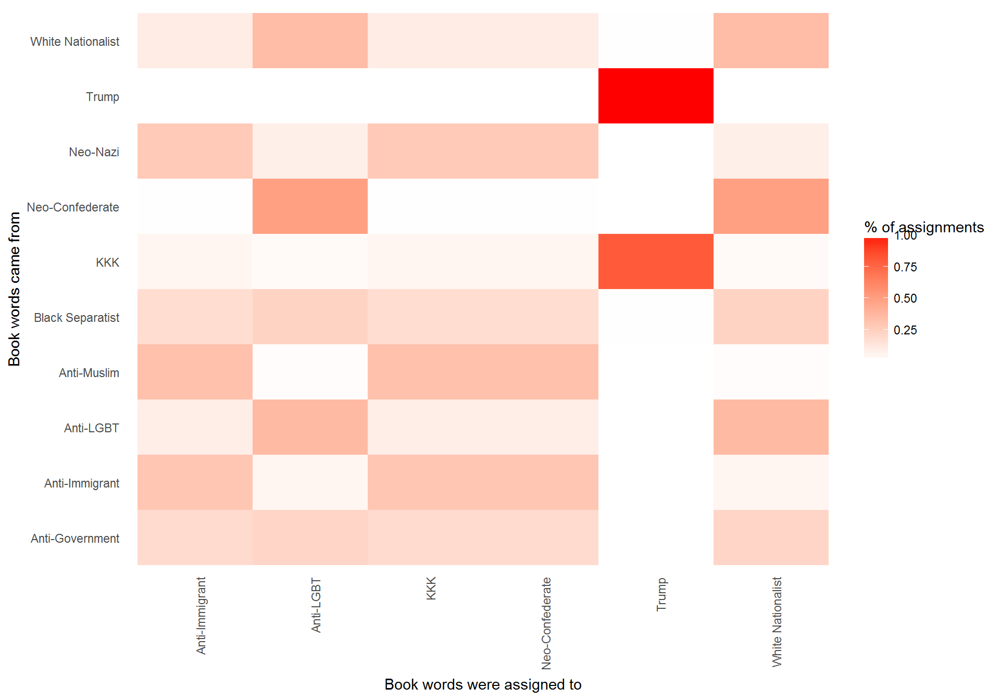

The central focus of this project is to analyze Donald Trump’s Twitter activity using different methods of text mining. We also use several approaches to determine the influence Donald Trump’s rhetoric has had on the popularity and the messaging of hate groups within the U.S. We focus on Trump’s Twitter activity to investigate any similarities between his Twitter feed and those of various domestic hate groups or individual extremists. We think that Trump’s rhetoric has changed vastly over the last decade. Considering his shift in tone, we are interested in exploring the evolution of hate speech during this time period.
Based on this, our main research question is: Is Trump’s Twitter activity associated with the Twitter activity of hate groups?
We predict that since the beginning of Trump’s presidential campaign, and continuing into his presidency, the Twitter activity of hate groups has increased and may even reflect Trump’s Twitter activity.
We begin with several text analyses of Trump’s tweets using methods such as n_grams and word correlations. We then use methods, such as topic modeling, to compare his Tweets to domestic hate groups.
We obtained data from the Trump Twitter Archive. This source compiled Trump’s Twitter activity into a dataset that includes information on the date he tweeted, the text he tweeted, and retweet counts. We use Trump’s tweets from 2009 to present day.
We also used the Southern Poverty Law Center to gather a list of individuals who have been identified as extremist. They range from being white Nationalist to anti-Islamic or anti-Semitic. We identified their Twitter handles, or their affiliated organization’s Twitter handles, and scraped their most recent tweets. Unfortunately, Twitter API allows us to go back to tweets six to nine days in the past, so we collected whatever tweets were available to us from May 5th 2017, to as early as April 26th, 2017.
The final data set for Trump’s tweets has approximately 30,866 observations, while the hate group data set is comprised of a total of 75 individuals and groups, totaling 62,252 tweets.
To get a preliminary idea of Trump’s tweets, we thought it would be interesting to look at the relationship between the words he uses. We chose to analyze bi-grams in two ways. First, we use bi-grams to visualize a network graph to get a broader idea of which words occur most with each other. Second, by looking at which words are used most frequently (and are therefore, highly correlated) with a set of issues.
We use a Markov chain to see the most common word to word connections from Trump’s tweets. This is basically a network graph that shows which words are most commonly connected to each other, and also shows which word is usually followed, or preceded by each other with arrows.
We use the (ggraph) package in R to plot the graph.
 Common bigram that occurred more than 20 times in which neither word was a stop-word
To get a better understanding of how Trump talks about specific issues, we chose to look at some word correlations. We look at his view on four main topics: religion (Christian, God, Muslim); politicians (Hillary Clinton, Bernie Sanders, Jeb Bush, and Ted Cruz); policy stance (economy, healthcare, and immigration); and race (arab, black, hispanic, white). The correlation is scored on a scale of 0 to 1.
The (tidyr) package allows us to filter n-grams and prepare the tweets for analysis.
Most of the words that Trump associates with religion, seem to be in a positive light. It is surprising to see that most of the negative words used are associated with Christianity, but it is often difficult to understand the larger premise of these word correlations from simply looking at n-grams relationships.  Top 10 words from Trump’s tweets that are most correlated with ‘christian’, ‘muslim’, and ‘god’.
When analyzing word correlations with politicians, the highest correlations are with the politicians’ last names, but when we look at Hillary Clinton specifically, we see that the word ‘crooked’ is also highly correlated - something that we all heard in his speeches during the presidential campaign.  Top 10 words from Trump’s tweets that are most correlated with ‘hillary’, ‘jeb’, ‘ted’, and ‘god’.
Trump’s stance on the policies that he repeated time and time again in his campaign are also quite clear in the word correlations. When it comes to the economy, Trump almost always had something to say about China. Regarding immigration, he talked about weak and illegal immigration. Regarding war and terror, ‘radical Islamic terrorism’ and ‘Syria’ were usually always on his agenda.  Top 10 words from Trump’s tweets that are most correlated with ‘healthcare’, ‘economy’, ‘immigration’, ‘war’, and ‘terror’.
Lastly, looking at his views on race, Trump was not very vocal on ‘white’ as a race, but he had a lot to say about the black, hispanic, and arab communities. Looking at the word correlations with hispanic, and black especially, we can see high correlations with words that have negative connotation.  Top 10 words from Trump’s tweets that are most correlated with ‘white’, ‘black’, ‘hispanic’, ‘arab’.
In this section, we use sentiment analysis to evaluate the emotional content of Trump’s tweets. To do this, we use the tidytext package, which contains several sentiment lexicons, or dictionaries. We use the nrc lexicon which categorizes words in a binary fashion (yes/no) into categories of positive, negative, anger, anticipation, disgust, fear, joy, sadness, surprise, and trust.
We use cbind to join Trump’s tweets with the nrc lexicon without the columns that are not used in that lexicon.We can then visualize the emotional content of Trump’s tweets by plotting the number of tweets by sentiment using a bar chart.
From the graph itself, it seems like most of Trump’s words show positive emotions - trust and anticipation being the largest categories. There also seems to be many negative sentiments in his texts
We must note that not every English word is in the lexicons because many English words are pretty neutral. It is important that we keep in mind that these methods do not take into account qualifiers before a word, such as in “no good” or “not true”; a lexicon-based method like this is based on unigrams only. For many kinds of text, there are not sustained sections of sarcasm or negated text, so this is not an important effect.
 Net sentiments for all of Trump’s tweets.
Once we use the tidy format to unnest_tokens() and group and mutate, we can filter the NRC lexicon for each emotion and use the inner_join() to perform the sentiment analysis. We plot Trump’s sentiment scale using the sentiment score as the y-axis and index as the x-axis to denote time from Trump’s oldest available tweet to his newest.
The graph shows that his earlier tweets used to be very positive, and motivational. Over time however, and possibly closer to the presidential campaign, his rhetoric has become less positive, and more balanced out with negative tweets.
 Sentiments through Trump’s tweets over time.
We wanted to see how close Trump’s rhetoric has been to extremist individuals/groups. To do this, we used the Southern Poverty Law Center to gather a list of domestic individuals/groups who have been identified as extremist and separated them into the following ideologies as mentioned in the website:
Topic modeling is a method for unsupervised classification of a collection of documents (in this case, ideologies) which finds natural groups (in this case, topics) of items so we can understand them separately.
LDA is a an algorithm for topic modeling where it allows documents to overlap each other in terms of content, rather than being separated into discrete groups, in a way that mirrors typical use of natural language. LDA finds the mixture of words that is associated with each topic, while also determining the mixture of topics that describes each document.
In our case, the LDA() function combines all the tweets (hate groups, and Trump tweets) and separates the mixture of words into topics that best fit with a body of topic (or ideology).
We use LDA to separate our combined set of tweets into 11 groups based on the idea that we have ten separate hate group ideologies and then one for Trump. It was assumed that each ideology will likely have unique topics of interest. For example, anti-immigrant groups will most likely mention words like ‘immigration’ or ‘illegal’ while anti-Islamic groups are likely to mention more words like ‘jihad’ and ‘muslim’.
This is illustrated in the visualization below. Group 2 seems to be clearly about immigration whereas group 7 is more about Islam. The tenth group focuses on gun control, and the 11th group seems to be more Neo-Nazi in nature.
It interesting to see how often Trump’s name appears across the topics mentioned by hate groups.
 Terms that are most common for each topic
In LDA, we can take the original tweet-word pairs and find which words in each tweet were assigned to which topic using the augment() function. This returns a tidy data frame of ideological group-term counts, but adds an extra column: topic, with the topic each term was assigned to within each group. We can combine this assignments table with the consensus ideological groups to find which words were incorrectly classified.
The combination of the true ideological groups, (title) or group_id, and the group assigned to it (consensus) can be used to visualize a confusion matrix, showing how often words from the tweets of one ideological group were assigned to another, using dplyr’s count() and ggplot2’s geom_tile functions.
What stands out most in the confusion matrix is that a lot of KKK words were mistaken for Trump’s words. All of Trump’s words were assigned correctly to Trump. Neo-Confederate related words were mistaken to be part of Anti-LGBT or White Nationalist words.
## # A tibble: 88 × 5
## group_id chapter topic gamma consensus
## <chr> <int> <int> <dbl> <chr>
## 1 Neo-Nazi 7 2 0.9999491 Anti-Immigrant
## 2 Neo-Nazi 7 2 0.9999491 KKK
## 3 Neo-Nazi 7 2 0.9999491 Neo-Confederate
## 4 Anti-Immigrant 2 2 0.9999645 KKK
## 5 Anti-Immigrant 2 2 0.9999645 Neo-Confederate
## 6 Anti-Immigrant 6 2 0.9999646 KKK
## 7 Anti-Immigrant 6 2 0.9999646 Neo-Confederate
## 8 Anti-Immigrant 1 2 0.6123448 KKK
## 9 Anti-Immigrant 1 2 0.6123448 Neo-Confederate
## 10 Black Separatist 3 2 0.4254101 Anti-Immigrant
## # ... with 78 more rows
 Confusion matrix showing where LDA assigned tweets from either Trump or an ideological hate group.
From Trump’s tweets analysis alone, we could not make a very strong case that his rhetoric has been negative. However, we do see some hateful speech in the word correlations, and we also see that his tweets have become less positive (and balanced out by more negative sentiments) over time.
When comparing Trump to other hate group ideologies, the confusion matrix captured how many of the Ku Klux Klan’s tweets are confused with Trump’s tweets. Knowing the KKK’s history and hate towards other races, this should be troubling to Trump. In the end, it is clear that he should be more mindful of what Tweets.